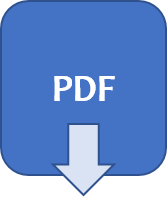

Psychology Labs and Resources

Department of Psychology
General Lab Use Policy
The complete policy is available for download
- Users must not in any way deliberately cause any form of damage to Liverpool Hope University’s facilities
- Users must comply with any instructions or regulations displayed in the labs
- Food and drink are not to be consumed in the laboratory
- Users must respect the rights of others and conduct themselves in a professional manner
- You must not occupy a computer workstation unless you are actively using it for learning, teaching and research
- You are not permitted to leave your belongings at a workstation in an attempt to reserve the workstation while you are away for an extended period. Not only do you risk the theft of belongings, it is also preventing the use of the equipment by others
- Space is at a premium in some of the laboratories, depending on the lab you need to use, some labs only have sufficient space for 1 student / staff researcher and 1 participant. Ensure that you arrange participant arrival timings such that overlap / waiting time between participants is avoided
- Ensure that the equipment is left as you would wish to find it when you walk in, with all surfaces and equipment being cleaned prior to leaving the laboratory
- Prior to any activity taking place the appropriate risk assessment shall be read, if an appropriate risk assessment is not in place, then the risk assessment shall be completed by the student and the Dissertation Supervisor
- No piece of equipment / protocol shall be used until the student is proficient and ‘signed off’ their supervisor (as appropriate)
- Undergraduate and postgraduate students must consult with their supervisors about their practical work in order that the potential hazards associated with their research be assessed and practicable precautions / procedures be put into place